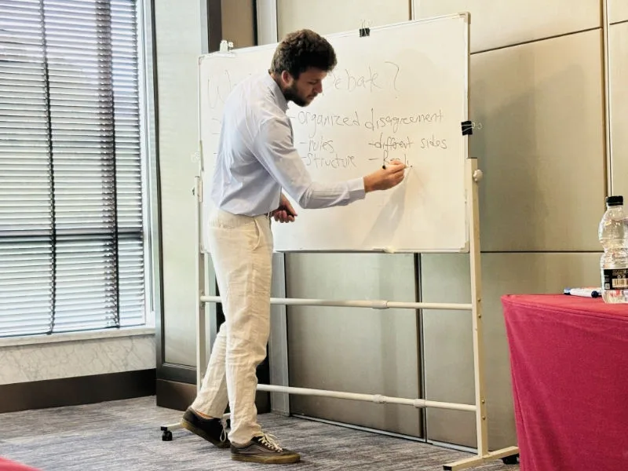

Live classes and tutoring
Philosophy, ethics and logic in small, discussion-based groups on Zoom, from four-day camps to ongoing classes. Explore classes →
The Modus Ponens Institute teaches philosophy, ethics and logic to school students1, online and in schools2, and runs international ethics competitions3.

Entries close21 Nov
Ages 7–18, online: record a speech or write a team essay on AI ethics
Saturday6 Mar 2027
Team ethics competition for ages 10–18. Early bird until 6 January
Philosophy, ethics and logic in small, discussion-based groups on Zoom, from four-day camps to ongoing classes. Explore classes →
Ethics Olympiads, TKEthics Invitationals and Global AI Debates. Compete online, get judge feedback, qualify for international finals. See competitions →
We visit schools to teach philosophy and ethics, help teachers start ethics teams, and help run competitions. In person or on Zoom. Plan a visit →
A free lecture on ethical theories, the competitor handbook, a 10-class course for teachers and the official match timer. Start learning →


In nine minutes, Archie Stapleton introduces the three lenses you can use on any ethics case: consequentialism, deontology and virtue ethics. It comes with free theory grids for planning your own cases.
| Consequentialism | Deontology | Virtue ethics |
|---|---|---|
 9 min
9 min
“Many of our students said this is the most meaningful extracurricular learning experience they have had.”
“A great competition, well organised and run. For a first time participant it could not have been easier.”
“I can’t emphasise enough the positive feedback that the silver medal has had on participating students.”
“The nature of this event being collaborative yet competitive is wonderful and so needed in our world.”
“The program has gone from strength to strength, with our senior teams winning gold in Victoria.”
September 4, 2026
Congratulations to our 2026 TKEthics International Grand Final and first-ever Novice Invitational medalists, plus the Fall Invitational early-bird deadline.
August 8, 2026
Our July in Shanghai teaching AI, ethics and debate, last places in the summer philosophy camps, and the fall 2026 event line-up.
July 10, 2026
Tech for Good AI Innovation Camp and GE-Elite Public Forum debate camp in Shanghai, plus our August online philosophy camps.